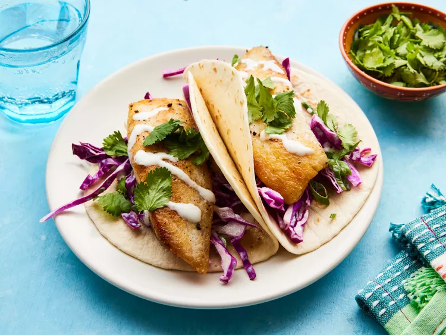

Fish Tacos

Description
This simple yet scrumptious recipe has a nice kick and is a house favorite. Delicious!
Ingredients
- ¼ cup reduced-fat sour cream
- 2 tablespoons lime juice
- salt and ground black pepper to taste
- 1 jalapeno pepper, halved lengthwise
- 2 ½ cups shredded red cabbage
- 4 green onions, thinly sliced
- 2 tablespoons olive oil
- 1 pound tilapia fillets, cut into strips
- 8 (6 inch) flour tortillas
- ½ cup chopped fresh cilantro
Steps
- Gather all ingredients.
- Mix sour cream and lime juice together in a large bowl; season with salt and black pepper. Reserve about half the mixture in another bowl for serving.
- Mince half the jalapeño pepper; save other half for later. Toss cabbage, green onions, and minced jalapeño half in remaining sour cream mixture until slaw is well mixed.
- Heat olive oil and remaining jalapeño half in a large skillet over medium heat; swirl oil to coat skillet evenly. Season tilapia fillets with salt and pepper.
- Pan-fry fish strips in the skillet in 2 batches until fish is golden brown and easily flaked with a fork, 5 to 6 minutes. Discard jalapeño half.
- Heat tortillas in the microwave on high until warm, 20 to 30 seconds.
- Serve fish in warmed tortillas topped with cabbage slaw, reserved sour cream mixture, and cilantro.